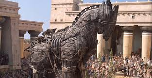
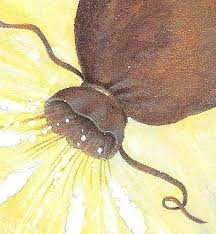
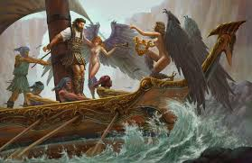
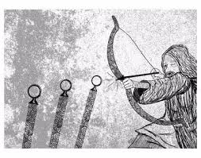
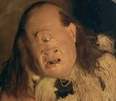
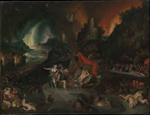
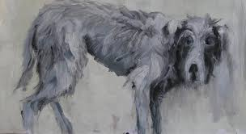
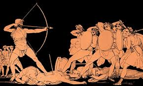

The Odyssey Chapter 1
Book 1 starts 10 years after the battle of Troy. After a while and a few encounters with the people of the lotus fruit and some others. We begin with the Goddess Athena appealing to Zeus to help Odysseus who has been wondering for 10 years.
The Odyssey Chapter 10
Book 10 starts with Odysseus going from the land of the cyclopes to a new island the home of a helper. Odysseus gets a present with a bag containing winds and when Odysseus and his men get within 10 days of home his men think that He was given gold and silver from the helper thus bringing them back to him and the helper believes that the gods hate them and wish to do harm to them.
The Odyssey Chapter 12
Book 12 Odysseus returns to Aeaea and he spends one last night with his helpers as one of them describes the obstacles to come. Odysseus then tells his crew what he was told and he then reaches his first obstacle as he was tied onto the mast of the ship so he couldn't do anything. Then when they were getting closer to the next obstacle Odysseus decided to not tell his crew thinking it would make them too scared to go home.
The Odyssey Chapter 21
Book 21 Odysseus gets a bow and he does something that no one could ever do he strummed the bow and proceed to send a arrow through 12 axes. Odysseus has done something that no other person could do.
The Odyssey Chapter 23
Book 23 Odysseus goes to his wife but because she has been tormented by the suitors she thinks that the gods are playing tricks upon her and she asks the helpers to move Odysseus’s bed and that is when Odysseus has problems cause their bed can't be moved due to it being made with the trunk of an olive tree and he proves that he is the real Odysseus and finally has made his way home. Then as the town’s folk here what has happened to the suitors they get enraged and go to try to kill Odysseus but Athens steps in and calms down all of the conflict.

The Odyssey Chapter 9
Book 9 Begins with Odysseus meeting a helper who he tells his story to and makes a alliance. Odysseus explains his challenges along the way and Explains the story of the lotus eaters. Odysseus then explains what happened with the cyclopes.
The Odyssey Chapter 11
In Book 11 Odysseus goes to the underworld and sees things like his mother who had died a while ago and he also sees some of his old shipmates that have died along the journey and he talks to them. Then he learns what is happening at Ithaca because a helper who had died in Ithaca helped Odysseus learn what was happening with the suitors.
The Odyssey Chapter 17
Book 17 A helper leaves Odysseys at another helpers hit and Odysseus receives a bad welcoming as he is hiding in a cloak to look like a old beggar then he receives the saddest thing along the journey he sees his old dog dying in a pile of manure. Then Odysseus ends up being left alone with his helper and the suitors.
The Odyssey Chapter 22
Book 22 Odysseus shoots a arrow through the leader of the suitors and starts a fight after revealing that he is the one and only Odysseus terrifying the rest of his enemies. Odysseus and 3 of his helpers fought a hard battle until the goddess of archery comes into the mix and helped Odysseus win the battle.
